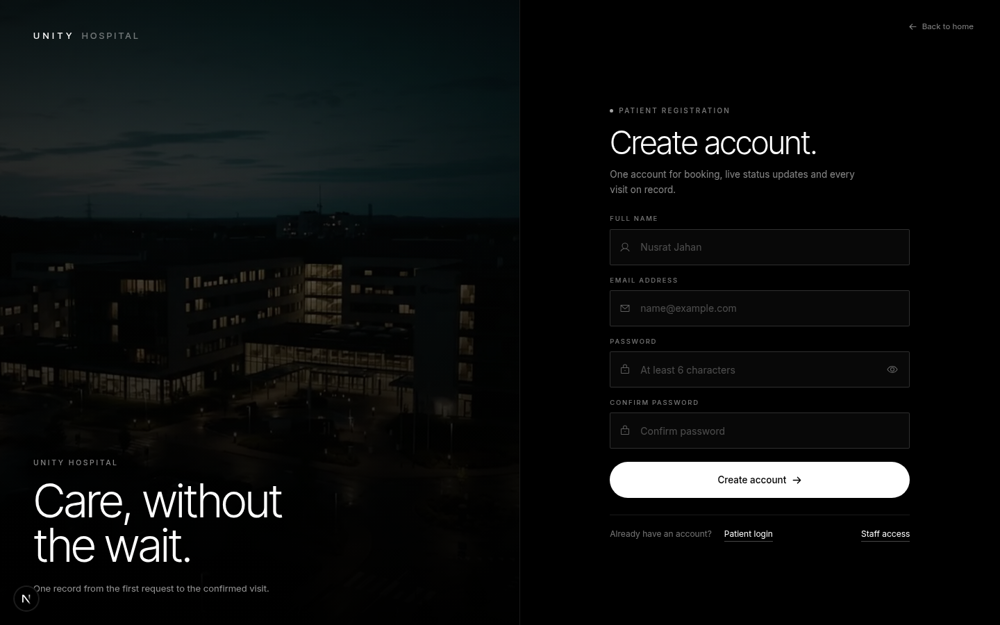
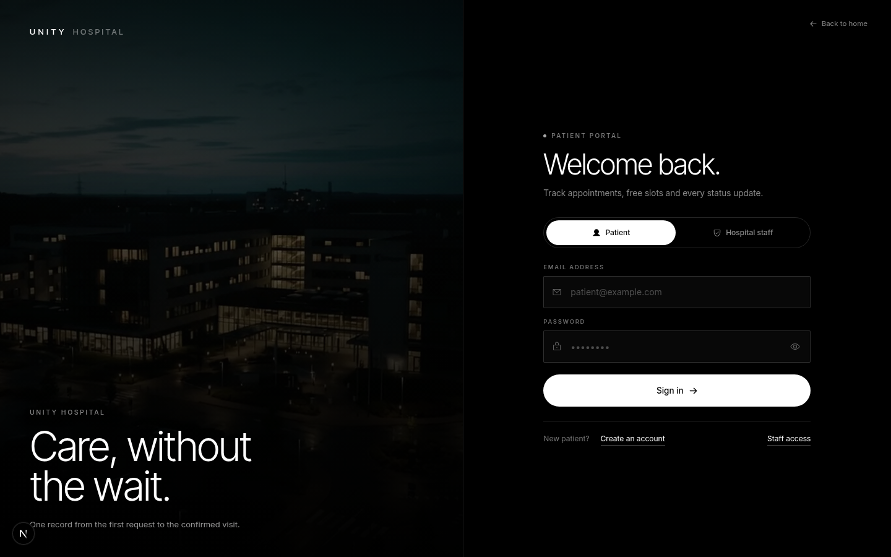
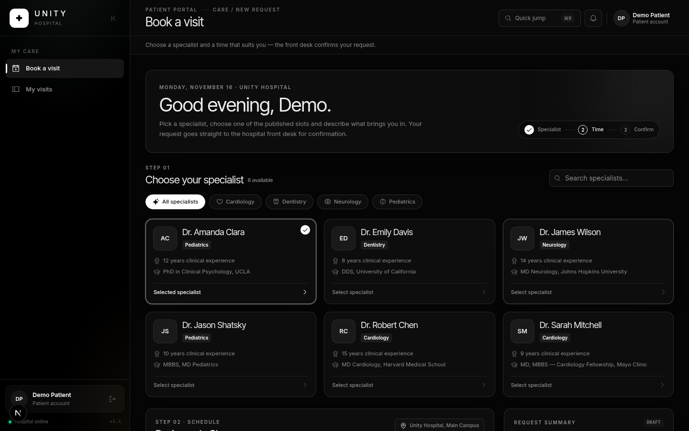
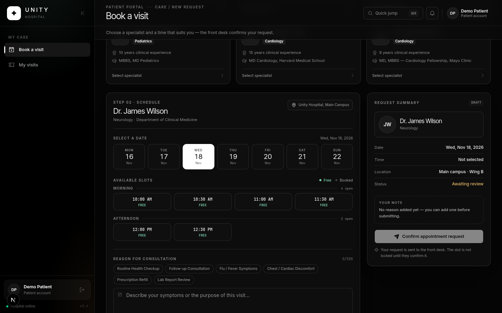
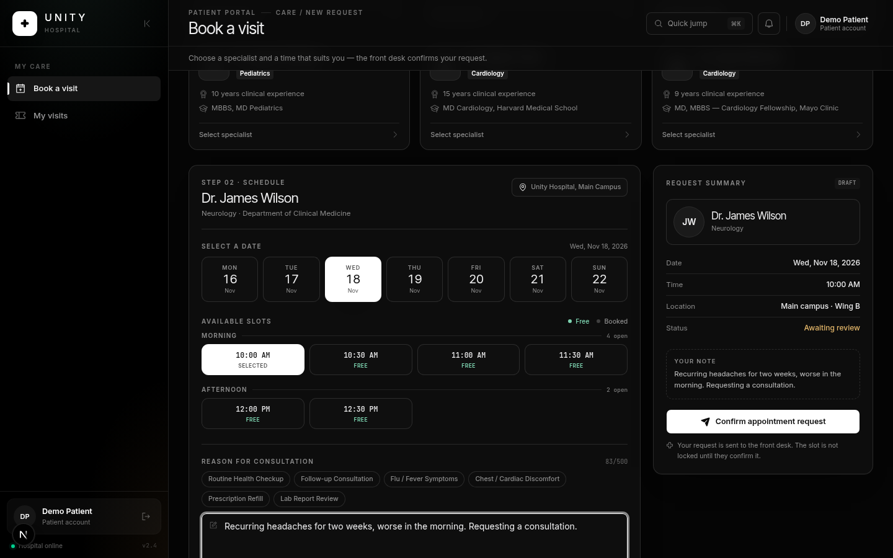
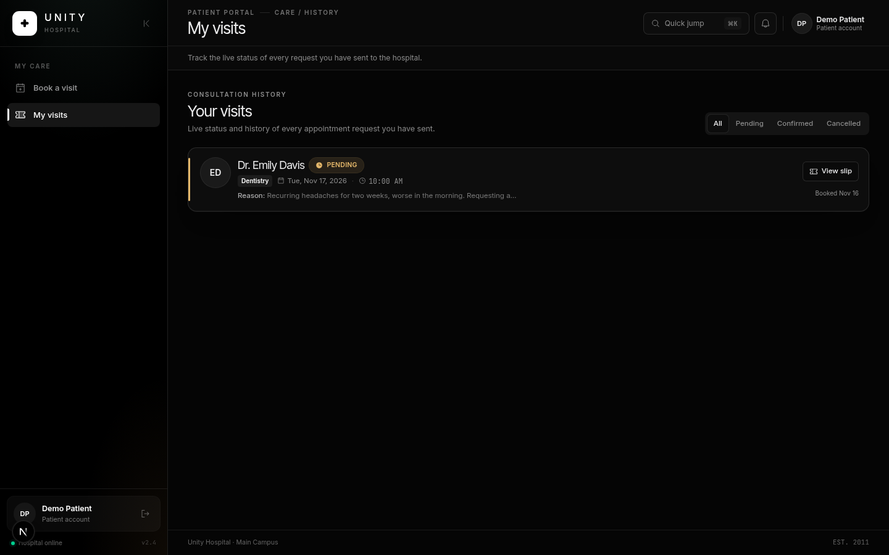
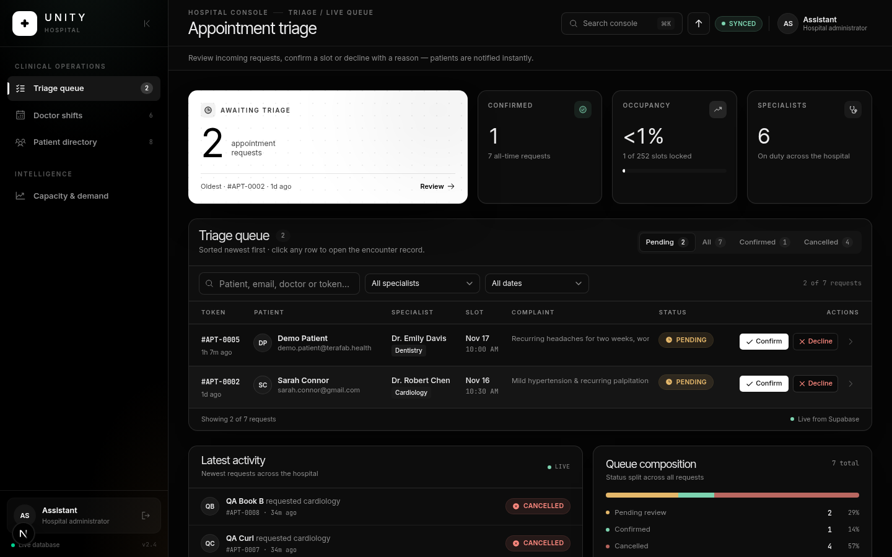
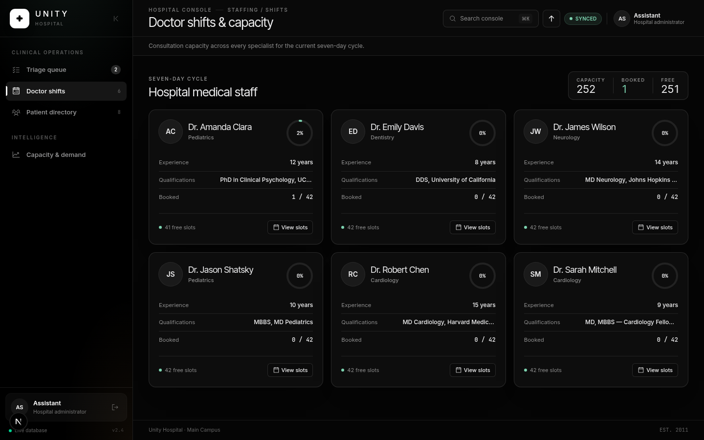
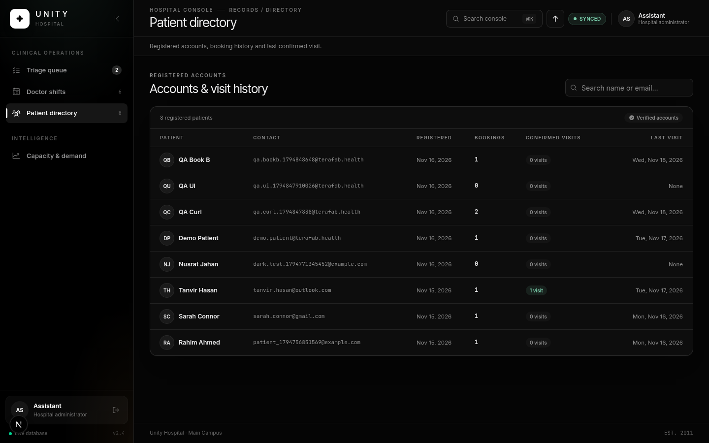
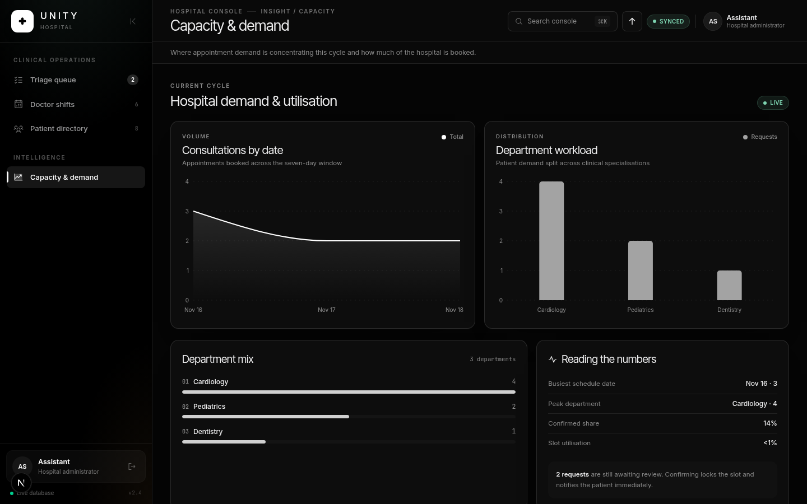

A typical clinic books patients by phone. The front desk answers calls all day, writes slots on paper slips, double-books a doctor when two callers ask for the same time, and has no picture of which specialist actually has a free hour. A patient calls five times trying to reach a cardiology slot; the desk says "we will call you back" and its note is lost. The hospital cannot even answer "how many of tomorrow's slots are taken" without counting by hand.
Unity Hospital is a web-based hospital appointment management system that replaces that workflow with one record: a public landing that explains the product and publishes real specialists and slots, a patient portal for registration and booking, a front-desk console that triages and confirms every request, live capacity reporting, and in-app notifications for both confirmation and decline. It is built and deployed as a real product — https://buildcamp.site — not a mock-up.
Application typeWeb application (three surfaces: public landing, patient portal, staff console)
FrameworkNext.js, App Router · TypeScript, Tailwind CSS, shadcn-style components
LandingStatic Unity Hospital HTML/CSS/JS, rewritten at / by Next.js
ServerNext.js API routes (Node) · jose JWT (HS256, 7-day, httpOnly session cookie)
AuthZ / hashesbcryptjs at cost 10 · server-side role check on every API route
DatabaseSupabase-hosted PostgreSQL · row-level security · PL/pgSQL stored procedures
DeploymentUbuntu VM · systemd (terafab.service on 127.0.0.1:3001) · Nginx TLS · Cloudflare
Rolespatient · assistant (hospital front desk)
Live data on report date6 specialists · 252 published slots (7-day cycle) · 5 registered patients · 4 appointment requests
Verified athttp://localhost:3000 and https://buildcamp.site (both exercised end-to-end)
The product splits into the booking surfaces and the data that binds them. A patient (Table 5) registers, picks a specialist and a free slot, and sends a request — a single atomic write. The front desk sees every request in one queue with per-request confirm / decline; a confirmation locks the slot and tells the patient, a decline frees the slot and tells the patient. The console also reads the same data for KPIs: pending / confirmed / occupancy (<1% when measured), per-specialist booked / free counts, daily trend and department distribution. A public landing presents the same product to visitors and feeds the lead table from callback requests. Appendix screenshots show every surface running on the live database.
| # | Use case | Actor | When | What happens |
|---|---|---|---|---|
| 1 | View landing & specialists | Visitor | Opens the homepage. | Reads the product story, the appointment-system copy and the list of specialists (from medislot_doctors). |
| 2 | Create account | Visitor | Opens /register. | Name, email, password. Errors on invalid email, short password, duplicate email, mismatch. |
| 3 | Sign in | Visitor | Opens /login. | bcrypt check; role routes them: patient → Book a visit, assistant → Hospital console. |
| 4 | Browse specialists & slots | Patient | Signed in as patient. | Picks a specialty, a specialist, sees only the dates and times the hospital has published. |
| 5 | Submit appointment request | Patient | A free slot selected; optional reason (≤500 chars). | One atomic transaction: the slot becomes booked, the request is pending, and the dashboard reflects it immediately. |
| 6 | Track status & get notified | Patient | Any time after a request. | My visits shows pending / confirmed / cancelled live; notifications arrive on both confirm and decline. |
| 7 | Review triage queue | Front desk | Signed in as assistant. | Sees pending requests with token, patient, specialty, slot, complaint and search/filter. |
| 8 | Confirm or decline | Front desk | A pending request is selected. | Confirm locks slot + notifies; decline frees slot + notifies. Slot stays unique either way. |
| 9 | View shifts, capacity & directory | Front desk | Clinical operations nav. | Doctor shifts (42 slots each over 7 days), occupancy, consultations by date, department mix, patient history. |
Table: medislot_users
One account per person. Patients book; the role `assistant` is the hospital front desk.
| Column | Type / constraint |
|---|---|
| id | uuid · primary key |
| name | text · not null |
| text · not null, unique | |
| password_hash | text · bcrypt (cost 10), never the plaintext |
| role | text · patient | assistant |
| created_at | timestamp · default now() |
Table: medislot_doctors
Specialists published on the landing and in the portals (6 in the seed data).
| Column | Type / constraint |
|---|---|
| id | bigint · primary key |
| name | text · not null |
| specialization | text |
| experience_years | integer |
| education | text |
| photo_url | text · nullable |
Table: medislot_time_slots
Published consultation times. 252 rows live — a 7-day cycle, 42 per specialist.
| Column | Type / constraint |
|---|---|
| id | bigint · primary key |
| doctor_id | bigint · FK → medislot_doctors |
| slot_date | date · published day |
| slot_time | time · e.g. 10:00:00 |
| is_booked | boolean · default false; flips true when a request is booked/confirmed |
Table: medislot_appointments
One appointment request. A slot can belong to at most one confirmed request.
| Column | Type / constraint |
|---|---|
| id | bigint · primary key (APT token) |
| patient_id | uuid · FK → medislot_users |
| doctor_id | bigint · FK → medislot_doctors |
| slot_id | bigint · FK → medislot_time_slots |
| reason | text · nullable, capped at 500 chars by the API |
| status | text · pending | confirmed | cancelled |
| created_at | timestamp · default now() |
Table: medislot_notifications
In-app messages written for the patient on every status change.
| Column | Type / constraint |
|---|---|
| id | bigint · primary key |
| user_id | uuid · FK → medislot_users |
| message | text |
| is_read | boolean · default false |
| created_at | timestamp |
Table: medislot_leads
Landing callback requests. Anonymous visitors may insert; no anonymous reads.
| Column | Type / constraint |
|---|---|
| id | bigint · primary key |
| name | text · not null |
| phone | text · not null |
| department | text · default 'General Medicine' |
| preferred_day | text · default 'Any day' |
| note | text · nullable |
| created_at | timestamp · default now() |
Three PL/pgSQL functions own every write on an appointment, so two writers can never produce a double booking or a lost update. They run as one transaction: reads the current state, writes the change, writes the notification, commits.
medislot_book_appointment(p_patient_id, p_doctor_id, p_slot_id, p_reason)
Insert the request with status pending and mark the slot booked. Any
conflict — slot already taken, same patient double-booking the day — is rejected inside the
transaction. Called by /api/appointments/book.
medislot_confirm_appointment(p_appointment_id)
Set status confirmed and write a notification row to the patient.
Called by /api/assistant/confirm.
medislot_cancel_appointment(p_appointment_id)
Set status cancelled, mark the slot free again, and notify the
patient. Called by /api/assistant/cancel.
The anonymous insert-only policy on medislot_leads is the only anonymous write
path: a visitor can submit a callback request, but nobody can read any lead. Every other read/write
is a role-checked API call on behalf of the signed-in account — the database itself is the
authoritative barrier.
Source listings are complete files except where noted. The two large client components —
src/components/AdminPortal.tsx (hospital console) and
src/components/PatientPortal.tsx (booking UI) — render on top of the APIs listed and
are omitted for print; their screenshots are in the appendix.
bcryptjs hashing plus a jose JWT — HS256, 7-day expiry, httpOnly/SameSite cookie, verified on every request.
import bcrypt from 'bcryptjs';
import { SignJWT, jwtVerify } from 'jose';
import { cookies } from 'next/headers';
import { SessionUser } from '@/types';
const SECRET_KEY = new TextEncoder().encode(
process.env.SESSION_SECRET || 'medislot-default-jwt-secret-key-32-bytes'
);
const COOKIE_NAME = 'medislot_session';
export async function hashPassword(password: string): Promise<string> {
return bcrypt.hash(password, 10);
}
export async function verifyPassword(password: string, hash: string): Promise<boolean> {
// PHP password_hash default creates $2y$... which bcryptjs handles cleanly.
// In case of $2y$, replace with $2a$ for perfect compatibility if needed.
const compatHash = hash.startsWith('$2y$') ? '$2a$' + hash.slice(4) : hash;
return bcrypt.compare(password, compatHash);
}
export async function createSessionToken(user: SessionUser): Promise<string> {
return new SignJWT({ ...user })
.setProtectedHeader({ alg: 'HS256' })
.setIssuedAt()
.setExpirationTime('7d')
.sign(SECRET_KEY);
}
export async function verifySessionToken(token: string): Promise<SessionUser | null> {
try {
const { payload } = await jwtVerify(token, SECRET_KEY);
return {
id: payload.id as string,
name: payload.name as string,
email: payload.email as string,
role: payload.role as 'patient' | 'assistant',
};
} catch {
return null;
}
}
export async function getSession(): Promise<SessionUser | null> {
const cookieStore = await cookies();
const token = cookieStore.get(COOKIE_NAME)?.value;
if (!token) return null;
return verifySessionToken(token);
}
export async function setSessionCookie(user: SessionUser) {
const token = await createSessionToken(user);
const cookieStore = await cookies();
cookieStore.set(COOKIE_NAME, token, {
httpOnly: true,
secure: process.env.NODE_ENV === 'production',
sameSite: 'lax',
path: '/',
maxAge: 60 * 60 * 24 * 7, // 7 days
});
}
export async function clearSessionCookie() {
const cookieStore = await cookies();
cookieStore.delete(COOKIE_NAME);
}
Server-side client with no persistent auth session: the app identifies users by its own JWT, not by Supabase Auth.
import { createClient } from '@supabase/supabase-js';
const supabaseUrl = process.env.NEXT_PUBLIC_SUPABASE_URL || 'https://kinbycyuzpqgjkkarptg.supabase.co';
const supabaseAnonKey = process.env.NEXT_PUBLIC_SUPABASE_ANON_KEY || '';
if (!supabaseUrl || !supabaseAnonKey) {
console.warn('Supabase URL or Anon Key is missing.');
}
export const supabase = createClient(supabaseUrl, supabaseAnonKey, {
auth: {
persistSession: false,
autoRefreshToken: false,
},
});
Validates input, rejects an existing email, inserts the hashed password and starts the session.
import { NextResponse } from 'next/server';
import { supabase } from '@/lib/supabase';
import { hashPassword, setSessionCookie } from '@/lib/auth';
export async function POST(request: Request) {
try {
const { name, email, password, confirm_password } = await request.json();
const cleanName = (name || '').trim();
const cleanEmail = (email || '').trim().toLowerCase();
if (!cleanName || !cleanEmail || !password || !confirm_password) {
return NextResponse.json({ error: 'All fields are required.' }, { status: 400 });
}
if (!/^[^\s@]+@[^\s@]+\.[^\s@]+$/.test(cleanEmail)) {
return NextResponse.json({ error: 'Please enter a valid email address.' }, { status: 400 });
}
if (password.length < 6) {
return NextResponse.json({ error: 'Password must be at least 6 characters long.' }, { status: 400 });
}
if (password !== confirm_password) {
return NextResponse.json({ error: 'Passwords do not match.' }, { status: 400 });
}
// Check existing email
const { data: existing } = await supabase
.from('medislot_users')
.select('id')
.eq('email', cleanEmail)
.maybeSingle();
if (existing) {
return NextResponse.json(
{ error: 'An account with this email already exists. Please login instead.' },
{ status: 409 }
);
}
const passwordHash = await hashPassword(password);
const { data: newUser, error: insertError } = await supabase
.from('medislot_users')
.insert({
name: cleanName,
email: cleanEmail,
password_hash: passwordHash,
role: 'patient',
})
.select('id, name, email, role')
.single();
if (insertError || !newUser) {
console.error('Registration insert error:', insertError);
return NextResponse.json({ error: 'Failed to create account. Please try again.' }, { status: 500 });
}
await setSessionCookie({
id: newUser.id,
name: newUser.name,
email: newUser.email,
role: newUser.role,
});
return NextResponse.json({
success: true,
user: newUser,
redirectTo: '/patient',
});
} catch (err: unknown) {
console.error('Registration error:', err);
return NextResponse.json({ error: 'An unexpected error occurred. Please try again.' }, { status: 500 });
}
}
bcrypt verification (·$2y$ compatible·) and role-aware redirect: patient → /patient, assistant → /admin.
import { NextResponse } from 'next/server';
import { supabase } from '@/lib/supabase';
import { verifyPassword, setSessionCookie } from '@/lib/auth';
export async function POST(request: Request) {
try {
const { email, password } = await request.json();
const cleanEmail = (email || '').trim().toLowerCase();
if (!cleanEmail || !password) {
return NextResponse.json({ error: 'Please enter your email and password.' }, { status: 400 });
}
const { data: user, error } = await supabase
.from('medislot_users')
.select('id, name, email, password_hash, role')
.eq('email', cleanEmail)
.maybeSingle();
if (error || !user) {
return NextResponse.json({ error: 'Invalid email or password. Please try again.' }, { status: 401 });
}
const isValid = await verifyPassword(password, user.password_hash);
if (!isValid) {
return NextResponse.json({ error: 'Invalid email or password. Please try again.' }, { status: 401 });
}
await setSessionCookie({
id: user.id,
name: user.name,
email: user.email,
role: user.role,
});
return NextResponse.json({
success: true,
user: {
id: user.id,
name: user.name,
email: user.email,
role: user.role,
},
redirectTo: user.role === 'assistant' ? '/admin' : '/patient',
});
} catch (err: unknown) {
console.error('Login error:', err);
return NextResponse.json({ error: 'An unexpected error occurred. Please try again.' }, { status: 500 });
}
}
Only signed-in callers may read the published slots for a doctor on a date.
import { NextResponse } from 'next/server';
import { supabase } from '@/lib/supabase';
import { getSession } from '@/lib/auth';
export async function GET(request: Request) {
const session = await getSession();
if (!session) {
return NextResponse.json({ error: 'Not authorized.' }, { status: 403 });
}
const { searchParams } = new URL(request.url);
const doctorId = parseInt(searchParams.get('doctor_id') || '0', 10);
const date = searchParams.get('date') || '';
if (doctorId <= 0 || !/^\d{4}-\d{2}-\d{2}$/.test(date)) {
return NextResponse.json(
{ error: 'doctor_id and a valid date (YYYY-MM-DD) are required.' },
{ status: 400 }
);
}
const { data: slots, error } = await supabase
.from('medislot_time_slots')
.select('id, slot_time, is_booked')
.eq('doctor_id', doctorId)
.eq('slot_date', date)
.order('slot_time', { ascending: true });
if (error) {
console.error('Error fetching slots:', error);
return NextResponse.json({ error: 'Failed to fetch slots.' }, { status: 500 });
}
return NextResponse.json(slots || []);
}
Patients only. The request goes through a stored procedure — booking is one database transaction, so a slot cannot be double-booked.
import { NextResponse } from 'next/server';
import { supabase } from '@/lib/supabase';
import { getSession } from '@/lib/auth';
export async function POST(request: Request) {
const session = await getSession();
if (!session || session.role !== 'patient') {
return NextResponse.json({ error: 'Not authorized. Patient access only.' }, { status: 403 });
}
try {
const { doctor_id, slot_id, reason } = await request.json();
const doctorId = parseInt(doctor_id, 10);
const slotId = parseInt(slot_id, 10);
const cleanReason = (reason || '').trim().slice(0, 500);
if (!doctorId || !slotId) {
return NextResponse.json(
{ error: 'Please choose a doctor, a date and a free time slot first.' },
{ status: 400 }
);
}
// Call atomic stored function
const { data, error } = await supabase.rpc('medislot_book_appointment', {
p_patient_id: session.id,
p_doctor_id: doctorId,
p_slot_id: slotId,
p_reason: cleanReason || null,
});
if (error) {
console.error('RPC medislot_book_appointment error:', error);
return NextResponse.json({ error: 'Something went wrong. Please try again.' }, { status: 500 });
}
if (!data.success) {
return NextResponse.json({ error: data.error }, { status: 400 });
}
return NextResponse.json({
success: true,
appointment_id: data.appointment_id,
slot_date: data.slot_date,
doctor_id: data.doctor_id,
});
} catch (err: unknown) {
console.error('Booking error:', err);
return NextResponse.json({ error: 'Something went wrong. Please try again.' }, { status: 500 });
}
}
The patient reads their own requests with live status and the pieces the desk can change.
import { NextResponse } from 'next/server';
import { supabase } from '@/lib/supabase';
import { getSession } from '@/lib/auth';
export async function GET() {
const session = await getSession();
if (!session || session.role !== 'patient') {
return NextResponse.json({ error: 'Not authorized.' }, { status: 403 });
}
const { data, error } = await supabase
.from('medislot_appointments')
.select(`
id,
status,
reason,
created_at,
doctor:medislot_doctors(name, specialization),
time_slot:medislot_time_slots(slot_date, slot_time)
`)
.eq('patient_id', session.id)
.order('created_at', { ascending: false });
if (error) {
console.error('Error fetching my appointments:', error);
return NextResponse.json({ error: 'Failed to fetch appointments.' }, { status: 500 });
}
// Format response matching original PHP fields
const formatted = (data || []).map((row: any) => ({
id: row.id,
status: row.status,
reason: row.reason,
created_at: row.created_at,
doctor_name: row.doctor?.name || 'Unknown',
specialization: row.doctor?.specialization || '',
slot_date: row.time_slot?.slot_date || '',
slot_time: row.time_slot?.slot_time || '',
}));
return NextResponse.json(formatted);
}
Assistant-only, newest first; the same request rows, re-shaped for the console UI.
import { NextResponse } from 'next/server';
import { supabase } from '@/lib/supabase';
import { getSession } from '@/lib/auth';
export async function GET(request: Request) {
const session = await getSession();
if (!session || session.role !== 'assistant') {
return NextResponse.json({ error: 'Not authorized. Assistant access only.' }, { status: 403 });
}
const { searchParams } = new URL(request.url);
const statusFilter = searchParams.get('status') || 'pending';
let query = supabase
.from('medislot_appointments')
.select(`
id,
status,
reason,
created_at,
patient:medislot_users(name, email),
doctor:medislot_doctors(name, specialization),
time_slot:medislot_time_slots(slot_date, slot_time)
`)
.order('created_at', { ascending: false });
if (statusFilter !== 'all' && ['pending', 'confirmed', 'cancelled'].includes(statusFilter)) {
query = query.eq('status', statusFilter);
}
const { data, error } = await query;
if (error) {
console.error('Error fetching assistant appointments:', error);
return NextResponse.json({ error: 'Failed to fetch appointments.' }, { status: 500 });
}
const formatted = (data || []).map((row: any) => ({
id: row.id,
status: row.status,
reason: row.reason,
created_at: row.created_at,
patient_name: row.patient?.name || 'Unknown Patient',
patient_email: row.patient?.email || '',
doctor_name: row.doctor?.name || 'Unknown Doctor',
specialization: row.doctor?.specialization || '',
slot_date: row.time_slot?.slot_date || '',
slot_time: row.time_slot?.slot_time || '',
}));
return NextResponse.json(formatted);
}
Locks the appointment, writes a notification to the patient, all atomically.
import { NextResponse } from 'next/server';
import { supabase } from '@/lib/supabase';
import { getSession } from '@/lib/auth';
export async function POST(request: Request) {
const session = await getSession();
if (!session || session.role !== 'assistant') {
return NextResponse.json({ error: 'Not authorized. Assistant access only.' }, { status: 403 });
}
try {
const { appointment_id } = await request.json();
const appointmentId = parseInt(appointment_id, 10);
if (!appointmentId) {
return NextResponse.json({ error: 'Invalid appointment ID.' }, { status: 400 });
}
const { data, error } = await supabase.rpc('medislot_confirm_appointment', {
p_appointment_id: appointmentId,
});
if (error) {
console.error('Confirm RPC error:', error);
return NextResponse.json({ error: 'Failed to confirm appointment.' }, { status: 500 });
}
if (!data.success) {
return NextResponse.json({ error: data.error }, { status: 400 });
}
return NextResponse.json({
success: true,
message: 'Appointment confirmed. The patient has been notified.',
});
} catch (err: unknown) {
console.error('Confirm error:', err);
return NextResponse.json({ error: 'Something went wrong.' }, { status: 500 });
}
}
Frees the slot and notifies the patient — again one transaction.
import { NextResponse } from 'next/server';
import { supabase } from '@/lib/supabase';
import { getSession } from '@/lib/auth';
export async function POST(request: Request) {
const session = await getSession();
if (!session || session.role !== 'assistant') {
return NextResponse.json({ error: 'Not authorized. Assistant access only.' }, { status: 403 });
}
try {
const { appointment_id } = await request.json();
const appointmentId = parseInt(appointment_id, 10);
if (!appointmentId) {
return NextResponse.json({ error: 'Invalid appointment ID.' }, { status: 400 });
}
const { data, error } = await supabase.rpc('medislot_cancel_appointment', {
p_appointment_id: appointmentId,
});
if (error) {
console.error('Cancel RPC error:', error);
return NextResponse.json({ error: 'Failed to cancel appointment.' }, { status: 500 });
}
if (!data.success) {
return NextResponse.json({ error: data.error }, { status: 400 });
}
return NextResponse.json({
success: true,
message: 'Appointment cancelled. The slot is free again and the patient has been notified.',
});
} catch (err: unknown) {
console.error('Cancel error:', err);
return NextResponse.json({ error: 'Something went wrong.' }, { status: 500 });
}
}
One query set for the triage dashboard: KPIs, trend series, department distribution, doctor capacity.
import { NextResponse } from 'next/server';
import { supabase } from '@/lib/supabase';
import { getSession } from '@/lib/auth';
export async function GET() {
const session = await getSession();
if (!session || session.role !== 'assistant') {
return NextResponse.json({ error: 'Unauthorized.' }, { status: 403 });
}
// 1. Fetch appointments
const { data: appointments, error: apptErr } = await supabase
.from('medislot_appointments')
.select(`
id,
status,
reason,
created_at,
patient:medislot_users(id, name, email),
doctor:medislot_doctors(id, name, specialization),
time_slot:medislot_time_slots(id, slot_date, slot_time, is_booked)
`)
.order('created_at', { ascending: false });
if (apptErr) {
console.error('Error fetching appointments for admin overview:', apptErr);
return NextResponse.json({ error: 'Database query failed' }, { status: 500 });
}
// 2. Fetch doctors
const { data: doctors } = await supabase
.from('medislot_doctors')
.select('*')
.order('name');
// 3. Fetch time slots
const { data: slots } = await supabase
.from('medislot_time_slots')
.select('id, doctor_id, slot_date, slot_time, is_booked')
.order('slot_date');
// 4. Fetch registered patients
const { data: patients } = await supabase
.from('medislot_users')
.select('id, name, email, created_at')
.eq('role', 'patient')
.order('created_at', { ascending: false });
const apptList = (appointments || []).map((row: any) => ({
id: row.id,
status: row.status,
reason: row.reason,
created_at: row.created_at,
patient_id: row.patient?.id || '',
patient_name: row.patient?.name || 'Unknown Patient',
patient_email: row.patient?.email || '',
doctor_id: row.doctor?.id || 0,
doctor_name: row.doctor?.name || 'Unknown Doctor',
specialization: row.doctor?.specialization || '',
slot_id: row.time_slot?.id || 0,
slot_date: row.time_slot?.slot_date || '',
slot_time: row.time_slot?.slot_time || '',
is_booked: row.time_slot?.is_booked || false,
}));
// Calculate KPIs
const totalAppointments = apptList.length;
const pendingCount = apptList.filter((a) => a.status === 'pending').length;
const confirmedCount = apptList.filter((a) => a.status === 'confirmed').length;
const cancelledCount = apptList.filter((a) => a.status === 'cancelled').length;
const totalSlotsCount = (slots || []).length;
const bookedSlotsCount = (slots || []).filter((s) => s.is_booked).length;
const occupancyRate = totalSlotsCount > 0 ? Math.round((bookedSlotsCount / totalSlotsCount) * 100) : 0;
// Doctor roster with capacity calculation
const doctorsCapacity = (doctors || []).map((doc) => {
const docSlots = (slots || []).filter((s) => s.doctor_id === doc.id);
const booked = docSlots.filter((s) => s.is_booked).length;
const total = docSlots.length;
const rate = total > 0 ? Math.round((booked / total) * 100) : 0;
return {
...doc,
totalSlots: total,
bookedSlots: booked,
freeSlots: total - booked,
occupancyRate: rate,
slots: docSlots,
};
});
// Trend data by date (for charts)
const dateCounts: Record<string, { date: string; pending: number; confirmed: number; cancelled: number; total: number }> = {};
apptList.forEach((a) => {
const d = a.slot_date || a.created_at.split('T')[0];
if (!dateCounts[d]) {
dateCounts[d] = { date: d, pending: 0, confirmed: 0, cancelled: 0, total: 0 };
}
dateCounts[d].total += 1;
if (a.status === 'pending') dateCounts[d].pending += 1;
if (a.status === 'confirmed') dateCounts[d].confirmed += 1;
if (a.status === 'cancelled') dateCounts[d].cancelled += 1;
});
const datesTrend = Object.values(dateCounts).sort((a, b) => a.date.localeCompare(b.date));
// Specialty distribution
const specCounts: Record<string, number> = {};
apptList.forEach((a) => {
const spec = a.specialization || 'General';
specCounts[spec] = (specCounts[spec] || 0) + 1;
});
const specialtyDistribution = Object.entries(specCounts).map(([name, count]) => ({
name,
count,
}));
// Patient directory with booking counts
const patientDirectory = (patients || []).map((p) => {
const userAppts = apptList.filter((a) => a.patient_id === p.id || a.patient_email === p.email);
return {
id: p.id,
name: p.name,
email: p.email,
registeredAt: p.created_at,
totalBookings: userAppts.length,
confirmedBookings: userAppts.filter((a) => a.status === 'confirmed').length,
lastVisit: userAppts[0]?.slot_date || null,
};
});
return NextResponse.json({
kpis: {
totalAppointments,
pendingCount,
confirmedCount,
cancelledCount,
totalSlotsCount,
bookedSlotsCount,
occupancyRate,
activeDoctorsCount: (doctors || []).length,
totalPatientsCount: (patients || []).length,
},
appointments: apptList,
doctors: doctorsCapacity,
analytics: {
datesTrend,
specialtyDistribution,
},
patients: patientDirectory,
});
}
Root request rewritten to the static Unity Hospital landing before any page handling — one product, two surfaces.
import type { NextConfig } from "next";
const nextConfig: NextConfig = {
turbopack: {
rules: {
"*.css": {
loaders: ["@tailwindcss/turbopack"],
as: "*.css",
},
},
},
async rewrites() {
return {
beforeFiles: [{ source: "/", destination: "/terafab/index.html" }],
};
},
};
export default nextConfig;
Anonymous visitors may insert a callback request; nobody else can read any row.
-- Run in the Supabase SQL editor to persist landing callback requests in Postgres. -- Until this exists, /api/leads falls back to .data/leads.ndjson. create table if not exists public.medislot_leads ( id bigint generated always as identity primary key, name text not null, phone text not null, department text not null default 'General Medicine', preferred_day text not null default 'Any day', note text, created_at timestamptz not null default now() ); alter table public.medislot_leads enable row level security; -- Public form: insert only. No anon reads. create policy "landing can insert leads" on public.medislot_leads for insert to anon with check (true);









